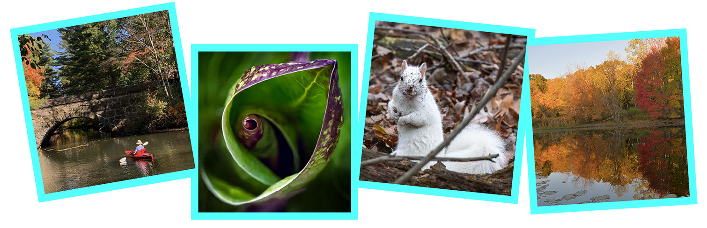

<div id="homepage">


    <main class="container-fluid">

        <header>
            <div>
                <h1>2026-27 Photo Contest</h1>
            </div>
        </header>

        <section class="row gray-row">
            <div class="col-xs-12">
                <div>
                    
                    <h1>AVIS: Andover's Treasure</h2><br />
                    <p>
											<h2>
												It's On!  Our Photo Contest is back for another year.
											</h2><br />

                    <br /><br />

										<h2>
											AVIS seeks submissions for our 2026-27 Photo Contest.<br/>
											Runs now through January 30, 2027
										</h2><br />
										<h3 style="line-height: 1.4;"><b>
												Show us how you connect with nature!  Your photographs beautifully capture the
												wildlife, landscapes, and special moments that make AVIS and our reservations so
												worth protecting.  Whether it's a stunning landscape, a favorite trail, or local
												wildlife, every image is a reminder of why these  places matter, and we want to
												see it.
										</h3></b>
										<br/>
                    <b>Who Should Enter?</b><br />
                    The <b>AVIS: Andover's Treasure</b> photo contest is open to photographers of all skill levels and ages.
                    The goal is that your images will stimulate awareness and interest in Andover's Land Trust, and in 
                    the importance of preserving our open spaces.  Your willingness to submit photos (and present 
                    framed prints if selected) will help that mission.  All submissions will be displayed on the 
                    AVIS website; winning and honorable mention images will be exhibited at the Andover Robb Center, 
                    and winning images at the Memorial Hall Library.  You need not be an Andover resident to enter. All are
										welcome to enter.
										<br /><br />

                    <b>What to Enter?</b><br />
                    What does AVIS mean to you?  For 131 years, generations of AVIS volunteers have worked to preserve 
                    land, protect native habitat, and provide opportunities for the public to experience and enjoy 
                    nature. Andover is fortunate to have such a treasure of open space, and we are seeking digital 
                    photographs that capture the essence of our AVIS properties, iconic sites, and landscapes. In 
                    order to qualify, photographs must be taken within an AVIS reservation. For a list of our reservations 
                    go to this page - <a href="/reservations.html">AVIS Reservations</a>. Each entrant may enter a maximum of 
                    3 photographs.  Your entries must have been photographed on or after 1 January 2021.  Please respect 
                    all rules posted on AVIS reservations, and please stay on the trails.<br /><br />

		    <b><a href="https://avisandover.org/competitions/2024-photo/winners.html" target="_blank">View the winners from the 2024 Photo Competition.</a></b><br />
		    <b><a href="https://avisandover.org/competitions/2025-photo/winners.html" target="_blank">View the winners from the 2025 Photo Competition.</a></b><br /><br />
		    

                </div>

                <div>
                  <a href="/competitions/2026-photo/rules.html" class="btn btn-primary">
										View Photo Contest Rules
									</a>
									&nbsp;
									<!--
									<a href="https://avisandover.wufoo.com/forms/mitli1kfz23i/" target="_blank" class="btn btn-primary">
										Submit your entry
									</a>
									-->
									<a target="_blank" class="btn btn-primary">
										Submissions will be accepted after November 15
									</a>
                  <br/><br/>
                </div>
            </div>


        </section>


    </main>
</div>
